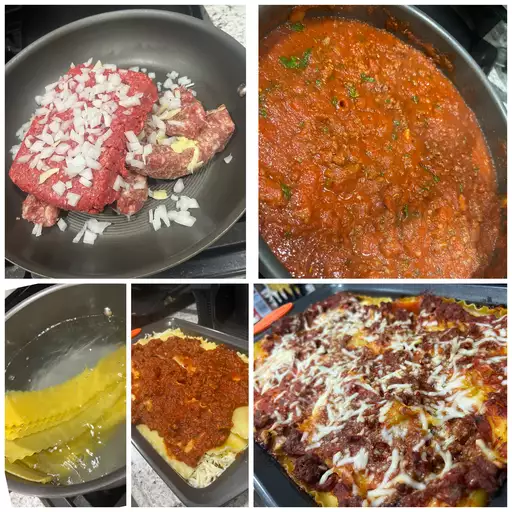

World's Best Lasagna Recipe

What is all the fuss about?
When John Chandler submitted this lasagna recipe to Allrecipes more than 20 years ago, he had no idea how successful it would become. One of our top-performing recipes of all time, World's Best Lasagna racks up more than 7 million views per year and has ranked among the most popular lasagna recipes on the internet for two decades. Unfortunately, John unexpectedly passed away at 53 years old — read all about his life and legacy here.
Ingredients
- 1 pound sweet Italian sausage
- 3/4 pound lean ground beef
- 1/2 cup minced onion
- 2 cloves garlic, crushed
- 1 (28) ounce can crushed tomatoes
- 2 (6.5 ounce) cans canned tomato sauce
- 2 (6 ounce) cans tomato paste
- 1/2 cup water
- 2 tablespoons white sugar
- 4 tablespoons chopped fresh parsley, divided
- 1 1/2 teaspons dried basil leaves
- 1 1/2 teaspoons salt, divided, or to taste
- 1 teaspoon Italian seasoning
- 1/2 teaspoon fennel seeds
- 1/4 teaspoon ground black pepper
- 12 lasagna noodles
- 16 ounces ricotta cheese
- 1 egg
- 3/4 pound mozzarella cheese, sliced
- 3/4 cup grated Parmesan cheese